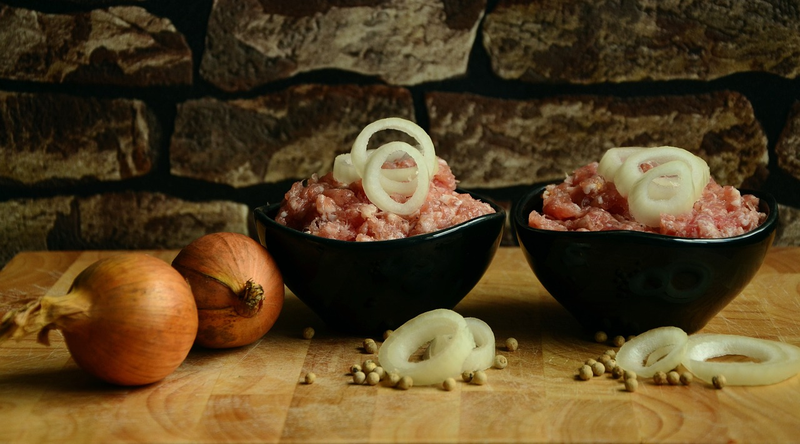

Veganes Mett
| 150 | g | Reiswaffeln (eine Packung) |
| 150 | ml | Wasser |
| 3 | EL | Tomatenmark |
| 2 | große Zwiebeln | |
| Salz und Pfeffer | ||
| 50 | ml | Rapsöl |
Zubereitung
Zunächst werden alle Reiswaffeln fein in eine Schüssel
zerbröselt.
Dann das Wasser mit dem Tomatenmark vermischen. Als
nächstes die Zwiebeln sehr fein schneiden oder hacken.
Alles zusammen in der Schüssel vermengen, bis eine
homogene, breiige Masse entsteht.
Das Ganze mit viel Salz und Pfeffer würzen. Noch einmal
umrühren und dann die abgedeckte Schüssel für mehrere
Stunden (gerne auch über Nacht) in den Kühlschrank
stellen.
Nach der Wartezeit das Öl für die Konsistenz hinzugeben,
noch einmal gut nachwürzen und kräftig vermengen.
Danach alles in ein schönes Behältnis geben und
servieren.